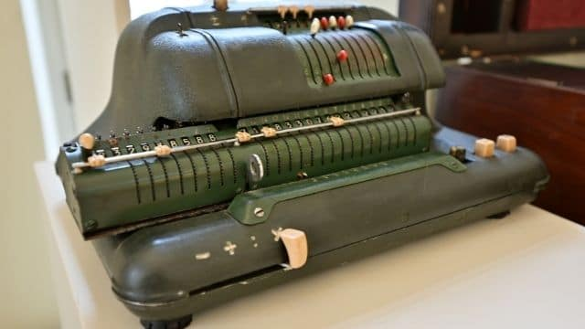
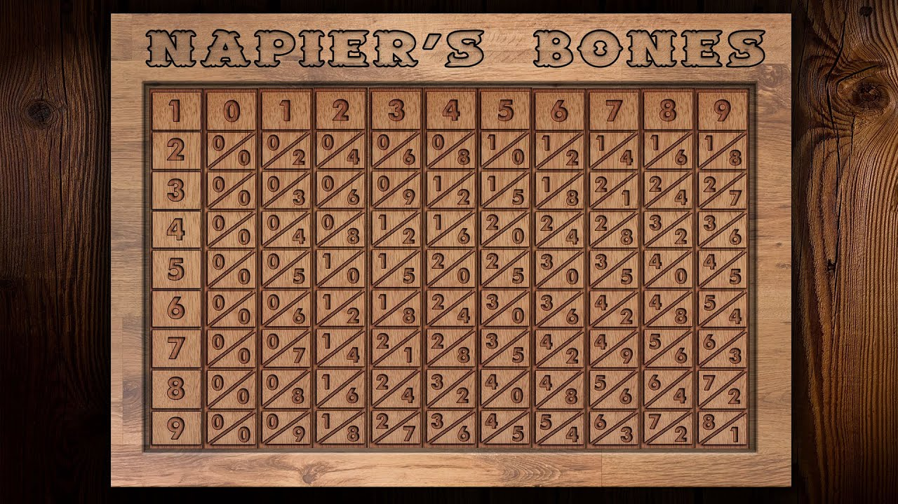
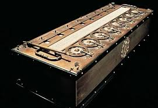
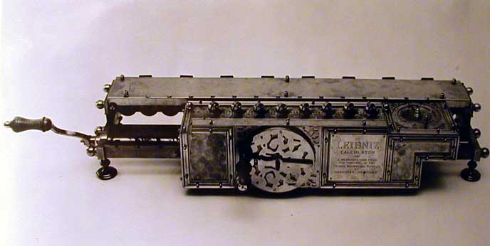
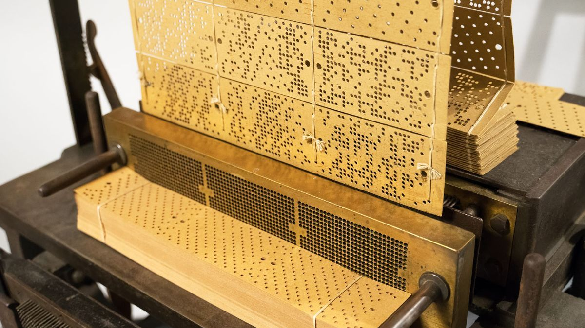
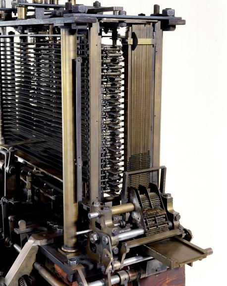

ELECTRO-MECHANICAL COUNTINNG DEVICES
An electro-mechanical counting device is a machine that uses both
electrical parts and mechanical actions to count or calculate numbers.
common electro-mechanical counting devices

-
John Napier’s Bones (1617): A set of rods used for simplifying multiplication and division, laying the groundwork for mechanical calculation.

-
Blaise Pascal’s Pascaline (1642): A mechanical calculator that could add and subtract, using gears and wheels for arithmetic operations.

-
Gottfried Leibniz’s Stepped Reckoner (1672): A mechanical calculator capable of addition, subtraction, multiplication, and division, using gears.

-
Joseph Marie Jacquard’s Loom (1801): A loom that used punched cards to control weaving patterns, an early form of programmable automation.

-
Charles Babbage’s Analytical Engine (1837): A mechanical design capable of performing any mathematical calculation using punched cards and gears, a precursor to computers.
-
Philip Emeagwali’s Contributions (1989): Pioneered the use of parallel computing, advancing data processing techniques for supercomputers.
CONTRIBUTION OF THE NAMED INVENTORS
- John Napier
-
Contribution: Introduced logarithms and invented Napier’s Bones.
-
Reason: To simplify and speed up complex calculations, especially for astronomers and mathematicians.
- Blaise Pascal
-
Contribution: Invented the Pascaline, an early mechanical calculator.
-
Reason: To help his father, a tax collector, perform accurate arithmetic quickly.
- Gottfried Leibniz
-
Contribution: Developed the Stepped Reckoner and binary number system.
-
Reason: Aimed to create a universal calculating machine and establish a simple binary system for calculations.
- Joseph Marie Jacquard
-
Contribution: Created the Jacquard Loom with punched cards for programmability.
-
Reason: To automate complex weaving patterns, reducing manual labor and errors.
- Charles Babbage
-
Contribution: Designed the Analytical Engine, the first concept of a programmable computer.
-
Reason: Wanted to automate mathematical computations to eliminate human error.
- Philip Emeagwali
-
Contribution: Advanced parallel computing techniques in supercomputing.
-
Reason: To solve complex scientific problems faster, inspired by oil reservoir simulations and efficiency challenges.